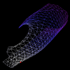

In a simple model the magnetic field around the earth can be approximated by an earth specific dipole component and a constant component that originates from the sun. The axis of the earth's magnetic dipole changes in the course of several thousand years. The resulting effects on the total magnetosphere can readily be examined by way of 3D visualization techniques, notably Illuminated Stream Lines and Line Integral Convolution.
 Flow surfaces